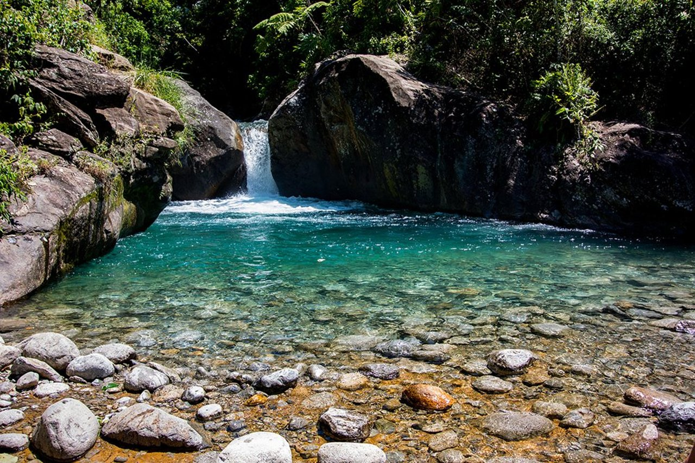
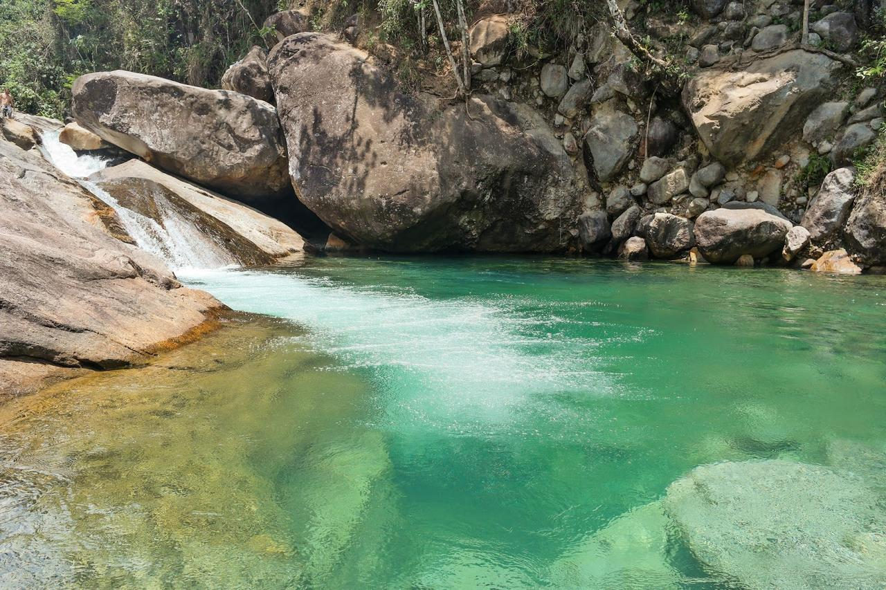
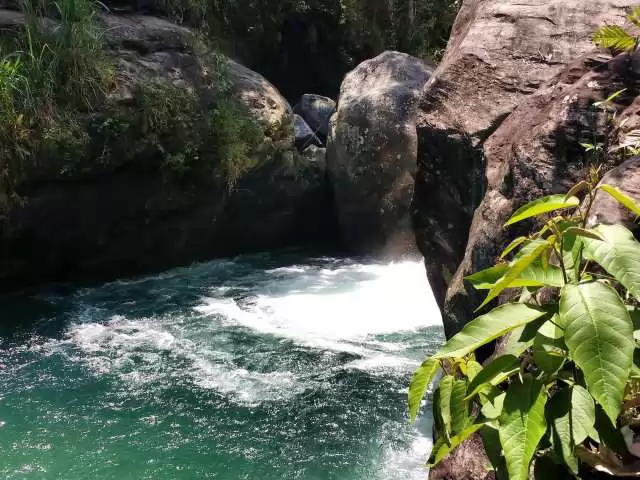

Pacote de Viagem para Lavrinhas - SP
Conheça Lavrinhas



Lavrinhas, no Vale do Paraíba paulista, oferece cenários naturais intocados, cachoeiras exuberantes e o clima serrano da Mantiqueira. O destino perfeito para quem busca tranquilidade e contato com a natureza!
Roteiro do Tour
- Chegada e recepção
- Trilha e banho na Cachoeira Véu da Noiva
- Visita ao Mirante da Serra (vista panorâmica)
- Dia seguinte: café da manhã e retorno
O que está incluso
- Transporte ida e volta em ônibus executivo
- 1 dia de passeio com guia local
- Seguro viagem
- Taxa de acesso aos atrativos
Regras e informações importantes
Crianças
Crianças de até 5 anos viajando no colo não pagam. A partir de 6 anos, pagam o valor normal pois é obrigatório ocupar um assento.
É obrigatório apresentar documento da criança no embarque
Embarque
Nossos embarques ocorrem em Itaquera, Barra Funda, Tatuapé e Santo Amaro.
Pagamento
Aceitamos pagamento via PIX, transferência bancária, cartão de débito e crédito em até 12x com juros.
Guia ou monitor de viagem
Durante toda a viagem, nosso grupo será acompanhado por um guia turístico profissional dedicado, que ficará disponível 24 horas para assegurar que o roteiro transcorra com perfeição e que todos os viajantes tenham uma experiência memorável.
Nossa equipe de monitores é composta por especialistas em turismo receptivo, capacitados não apenas para orientar os passeios, mas também para transformar cada momento em diversão garantida.
Incluso
Transporte ida e volta
Guia/Monitor
Acesso às atrações
Não incluso
Bebidas
Alimentação
Hospedagem (passeio diário)
Ônibus
Manter o ambiente limpo e organizado.
Respeitar os horários estabelecidos pelo guia.
É proibido consumir bebidas alcoólicas no veículo.
Uso de cinto de segurança obrigatório.
Selecione as datas disponíveis
Local de Embarque*
Selecione seu local de embarque e previsão de horário:
Valores
Lavrinhas - SP | Bate e Volta
R$ 179,00
Aceitamos pagamento via PIX, transferência bancária, cartão de débito e crédito em até 12x com juros.
Importante
Levar: roupa de banho, tênis antiderrapante, toalha, protetor solar e repelente.
Não recomendado para pessoas com dificuldade de locomoção.